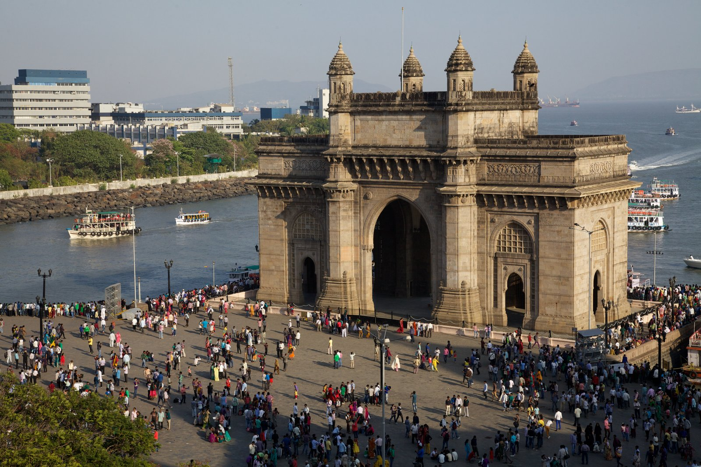

West Zone
A tapestry of unforgettable contrasts—from the moonlit white salt marshes of the Great Rann of Kutch, sacred Dwarka, and Gir’s Asiatic lions to Udaipur’s shimmering island palaces and Chitrakote’s thunderous horseshoe falls.
270° West · Regional Destinations
Royal Lakes, Salt Deserts & Waterfalls
Explore Udaipur, Gujarat, and Chhattisgarh—each accompanied by authentic destination guides and ready-to-book multi-day itineraries.
Destination Highlights
Places You Can Visit in the West
Udaipur · Gujarat · Chhattisgarh
West Zone Itineraries
Filter all 9 curated West Zone itineraries below or enquire for customized group departures.
| Tour Name | Destination | Duration | Pick Up / Drop | Route & Stay Summary | Action |
|---|